Perfil do usuário
Histórico de Versões
| Data | Versão | Descrição | Autores | Revisor |
|---|---|---|---|---|
| 12/03/2021 | 0.1 | Criação do Documento | Eduarda, Luis Marques, Herya, Pedro | Gabriela Pivetta |
| 16/03/2021 | 0.2 | Adição da introdução e metodologia | Giovana Dionisio | Gabriela Pivetta |
| 16/03/2021 | 0.3 | Adição de informações sobre a metodologia | Giovana Dionisio | Gabriela Pivetta |
| 16/03/2021 | 0.4 | Adição dos Resultados e da Análise | Gabriela Pivetta | Giovana Dionisio |
| 18/03/2021 | 0.5 | Adição do questionário | Giovana Dionisio | Eduarda Servidio |
| 18/03/2021 | 0.6 | Referências imagens | Giovana Dionisio | Eduarda Servidio |
Introdução
Perfil de usuário trata de uma descrição detalhada sobre o perfil das pessoas cujo produto pretende apoiar. O seu levantamento é uma atividade interativa onde são levantados dados que auxiliam o entendimento de para quem o produto está sendo construído.
A partir das infromações levantadas, separa-se os usuários em grupos que serão baseados nas suas características comuns. Com esses grupos, é possível escolher quais perfis serão priorizados no processo de design do produto em questão.
Metodologia
Utilizamos um questionário elaborado através da plataforma do Google Forms e divulgado, através das redes sociais, entre usuários e não usuários do site CIL 2 BSB para coletarmos as informações sobre seus perfis. Foram feitas perguntas relacionadas às características básicas de cada um, como gênero, idade e afinidade com tecnologia. Além disso, questionamos especificamente os usuários do CIL2 BSB sobre as suas experiências com o site.
Questionário
O questionário consiste nas seguintes perguntas:
Seção 1 (Todos os usuários)


(Imagens produzidas através de capturas de tela da aplicação Google Forms. Autor: Giovana Dionisio)
Seção 2 (Usuários vinculados ao CIL2)

(Imagem produzida através de captura de tela da aplicação Google Forms. Autor: Giovana Dionisio)
Seção 3 (Usuários vinculados ao CIL2 que já acessaram o site)


(Imagens produzidas através de capturas de tela da aplicação Google Forms. Autor: Giovana Dionisio)
Resultados
A seguir estão os resultados do questionário, com 31 participantes no total, sendo que 24 possuem algum vínculo com o CIL 2 BSB e, destes, 19 já acessaram o site oficial da instituição.
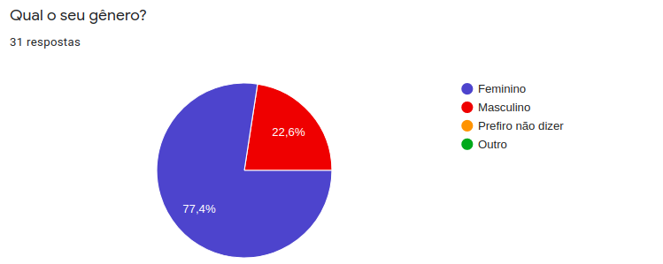 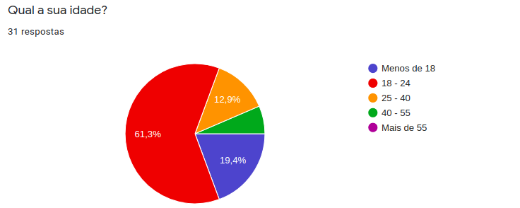 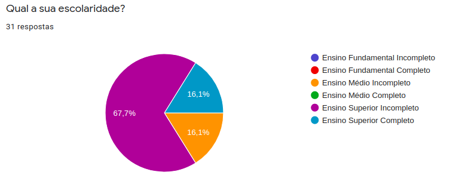 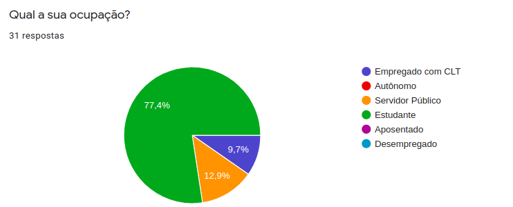 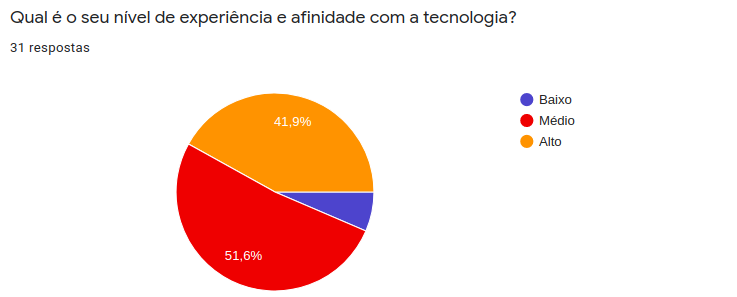 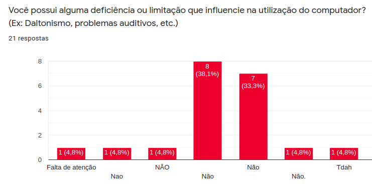 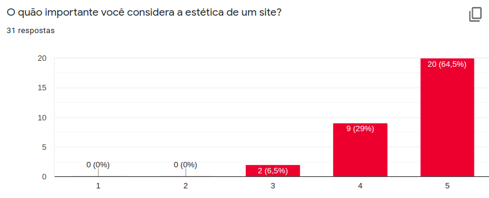 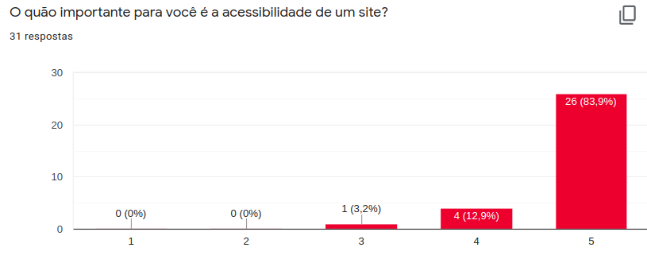 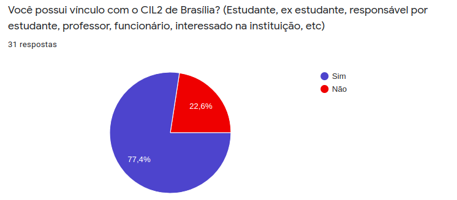 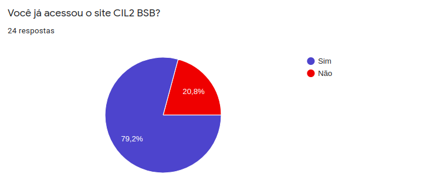 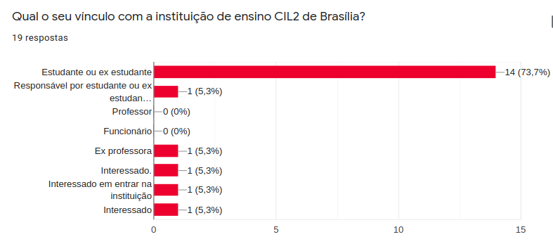 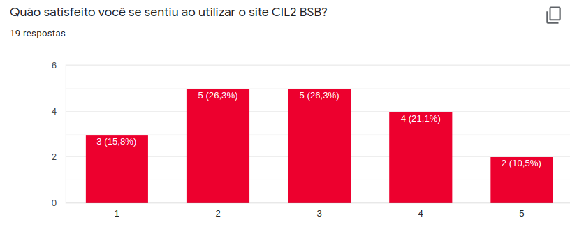 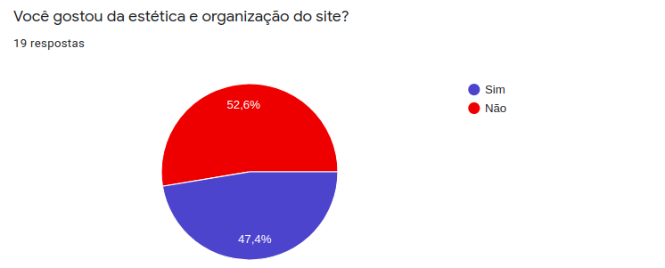 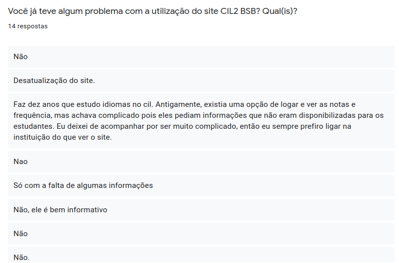 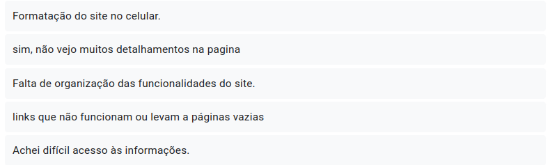 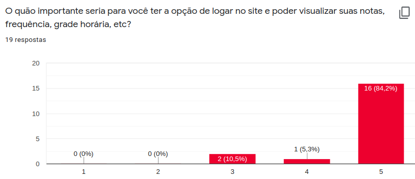 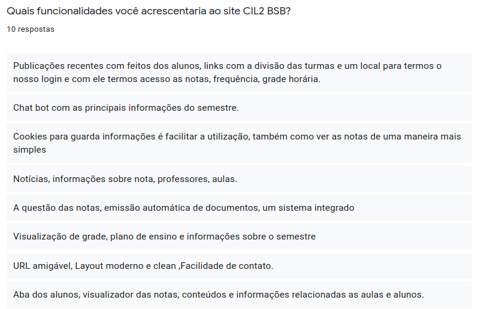
(Imagens produzidas através de capturas de tela da aplicação Google Forms. Autor: Gabriela Pivetta)
Análise
Podemos concluir que a maioria das pessoas consideram importante a estética e a acessibilidade de qualquer site. Em relação às pessoas que já acessaram a plataforma do CIL 2 BSB, metade gostou da estética e organização dele. A grande maioria dessas pessoas são estudantes ou ex estudantes e o nível de satisfação com o site foi médio. Também foi sugerida a opção dos usuários terem um login próprio para visualizarem suas informações pessoais como notas, frequência e grade horária e 84% considerou a opção como muito importante.
Alguns problemas relatados a partir do uso da plataforma são:
- Falta de informações;
- Desatualização do site;
- Responsividade mobile ruim;
- Desorganização;
- Links não funcionais.
Algumas sugestões de melhorias e novas funcionalidades:
- Disponibilizar a visualização de notas, professores, plano de ensino, conteúdos, alunos, grade horária, frequência (com login pessoal preferencialmente);
- Layout mais moderno;
- Emissão de documentos;
- Publicações com feitos recentes de alunos.
Bibliografia
BARBOSA, Simone Diniz Junqueira; DA SILVA, Bruno Santana. Interação humano-computador. Elsevier, 2010. Cap. 6. p. 174-175: Organização do Espaço de Problema.